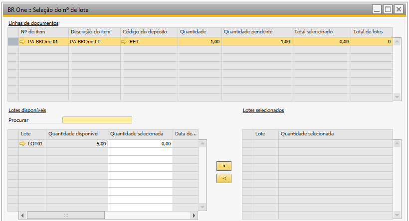
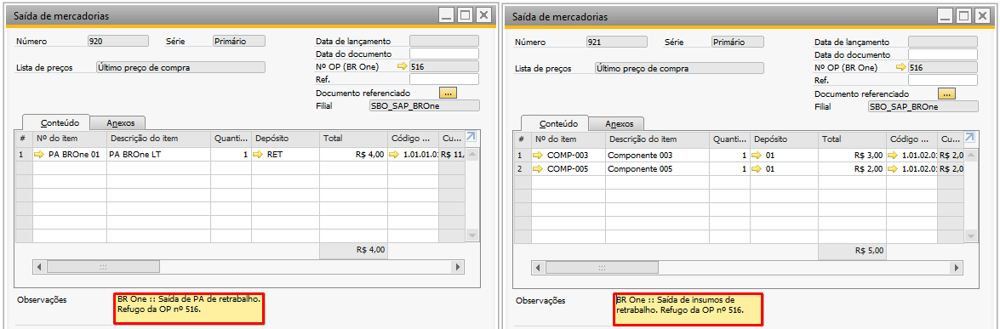

Entrada de PA Refugo
Caso a entrada de PA seja do tipo Refugo e a Conta para apontamentos de refugo da tela Configurações de produção esteja vazia, a seguinte mensagem será exibida:
{kind=link}
BR One :: Não é possível continuar com o processo de refugo, pois a conta está vazia na configuração de produção.
Se o item for administrado por lote/série, os componentes na OP forem de baixa manual e a configuração Obrigar a realizar a Saída de insumos antes da Entrada de PA (Configurações de produção/aba > Entrada de PA) estiver desmarcada, será criada uma saída de mercadoria para o item pai da OP.
Ao clicar em Adicionar na entrada de PA que é refugo, a tela BR One :: Seleção do nº de lote/série será aberta.
{kind=link}
Caso a configuração Obrigar a realizar a Saída de insumos antes da Entrada de PA esteja marcada e não haja saída de insumo para a OP, a seguinte mensagem será exibida:
{kind=link}
BR One :: Não foi realizado a saída de insumos (dentro do % de tolerância definido) para os itens desta OP.
Caso haja componentes na OP que sejam do tipo Baixa por explosão, ao inserir a entrada de PA, será criada uma saída de mercadorias com o item da entrada e também com os componentes de baixa manual.
O mesmo processo será feito para itens que não são de lote/série, a única diferença é que a tela BR One :: Seleção do nº de lote/série não será aberta ao inserir a Entrada de PA.